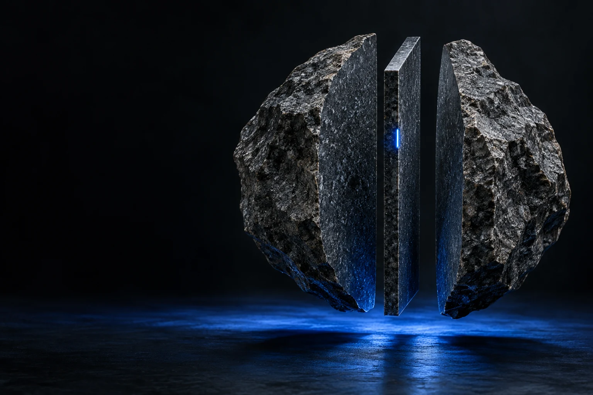
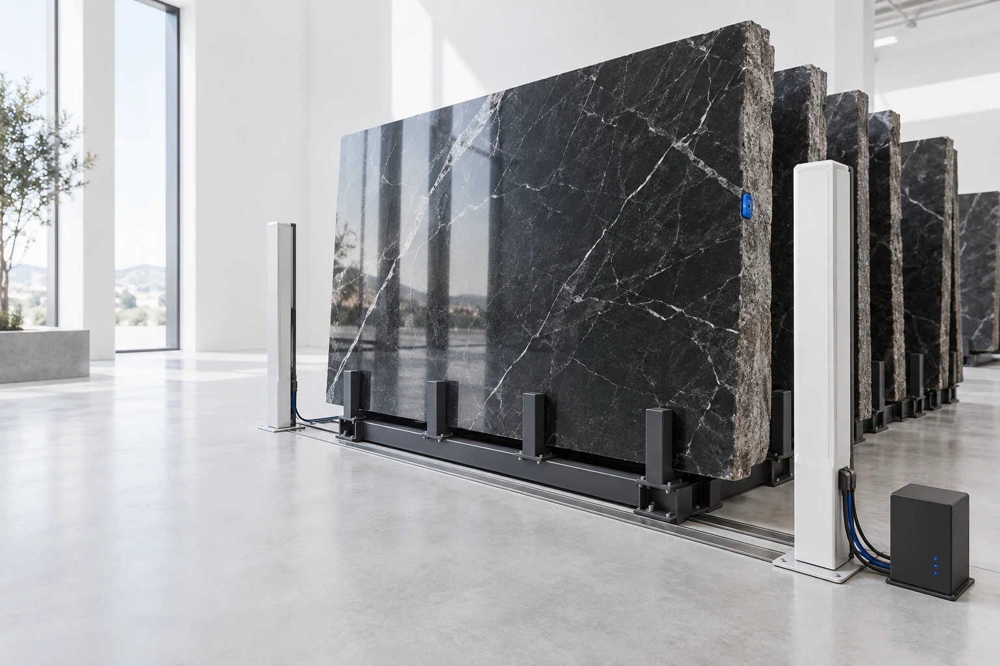
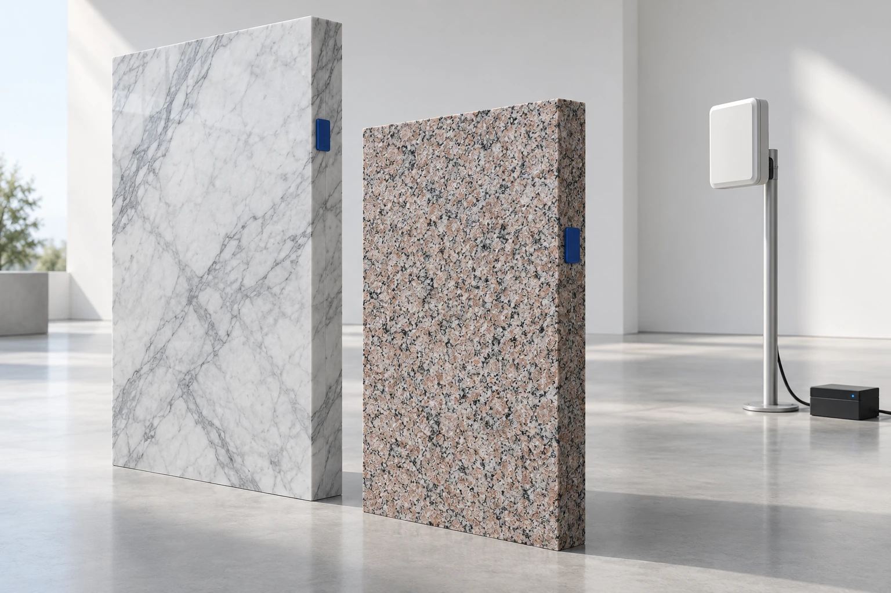
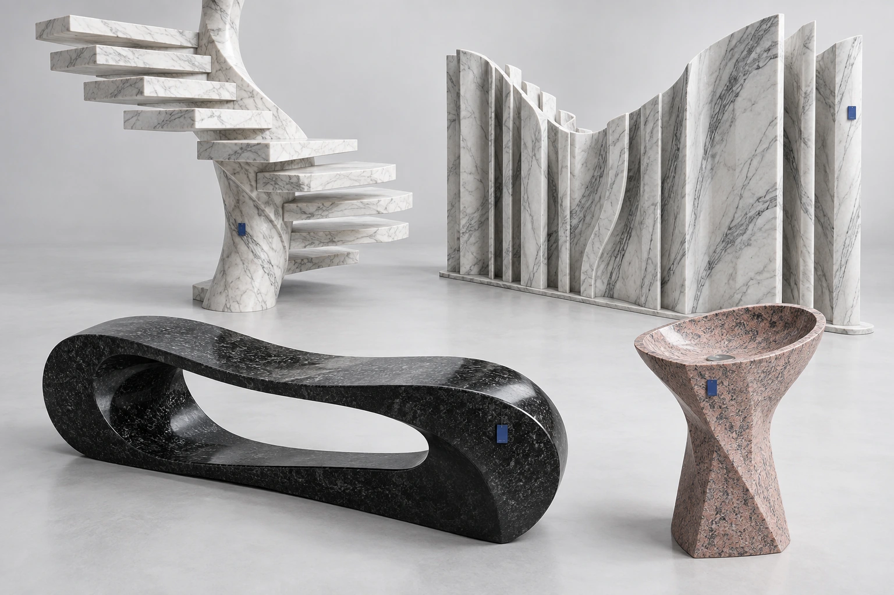
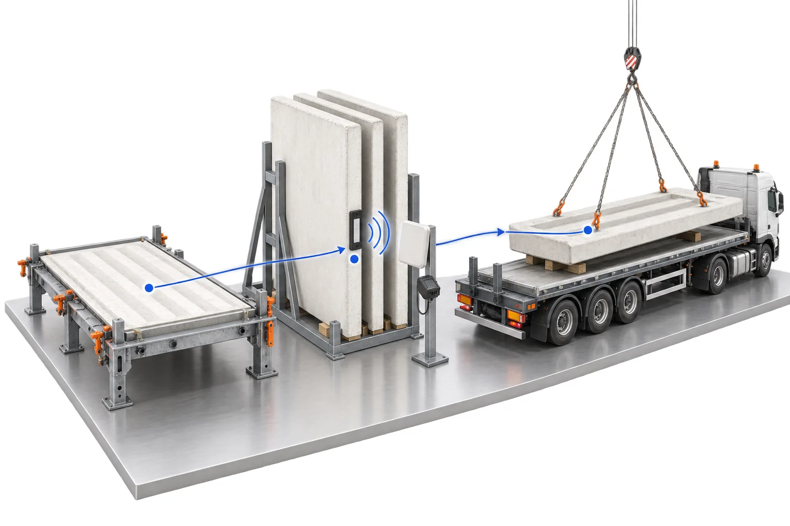
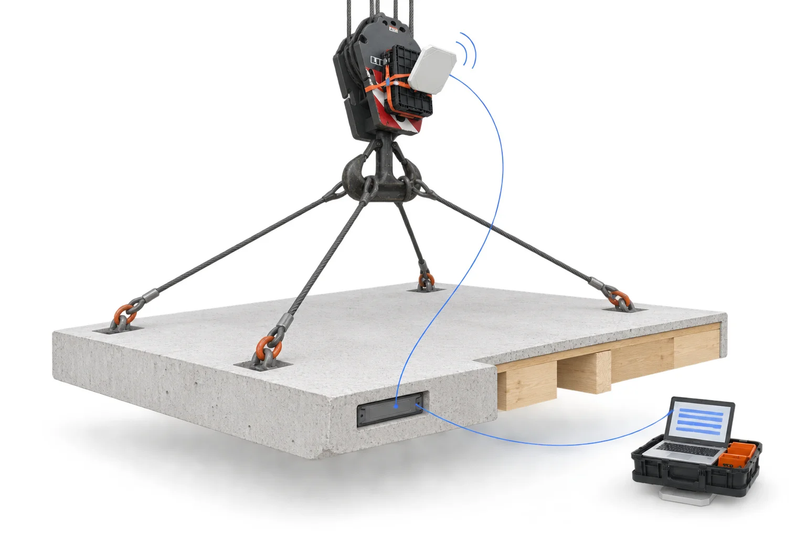
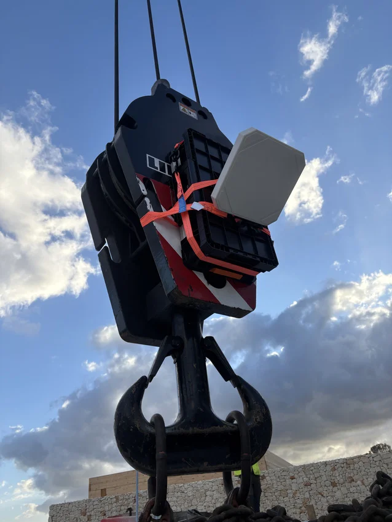
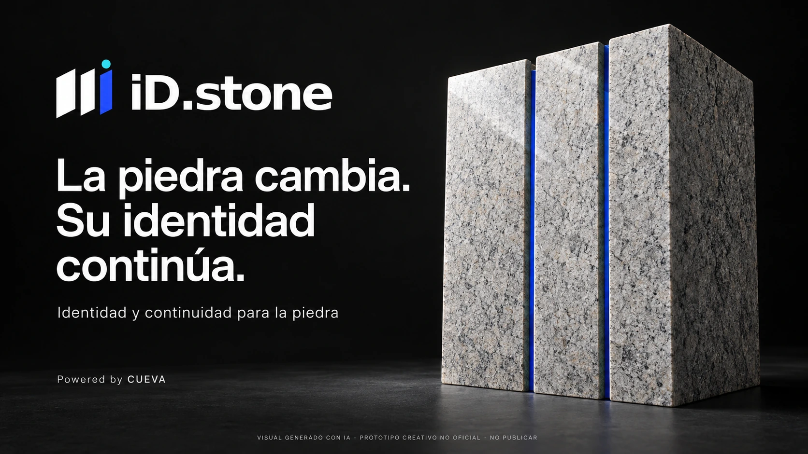

Materia
Bloque, tabla, pieza, retal.
Identidad al nivel que necesita la operación.

Millones de años de historia.
Una nueva forma de continuarla.
iD.stone conecta unidades, procesos, documentos y personas durante todo el ciclo de la piedra.
Una identidad que comienza en el productor. Una capa de datos que continúa en el taller, el almacén, la logística y el proyecto. Información útil para trabajar, vender, mantener y recuperar.
Bloque, tabla, pieza, retal.
Identidad al nivel que necesita la operación.
Antenas fijas + neuronas CUEVA.
Captura automática con contexto.
Qué, quién, dónde y cuándo.
Reglas que convierten lecturas en eventos.
Stock, documentos y servicios.
Información conectada con tus sistemas.
Antenas fijas y neuronas CUEVA conectan el paso de la piedra con el contexto de la operación.
Simulación · sin hardware conectado
Las antenas interrogan las etiquetas a distancia. La neurona CUEVA procesa la captura cerca del trabajo: filtra duplicados, aplica el contexto configurado y conserva los eventos cuando no hay conexión.
El código de barras y el QR siguen disponibles como vías complementarias. La cobertura de radio, las reglas y la integración se validan en cada puesto.Un mismo espacio. Un recorrido que conecta origen, transformación y arquitectura.
Una identidad que nace en el origen y conecta cada corte, cada movimiento y cada nueva vida.
Menos fricción operativa. Más capacidad comercial. Cada etapa conecta una capacidad del sistema con un resultado de negocio que se puede comprobar.
Beneficios objetivo. La línea base y el piloto determinan el impacto real; no se presuponen ahorros ni aumentos de ventas.

La identidad permanece aunque cambie el soporte. Asociamos las etiquetas existentes y ampliamos la captura con RFID allí donde aporta automatización.
Bloque, tabla, pieza y retal vinculados. El corte crea nuevas unidades sin perder el origen.
La lectura se combina con ubicación, tarea, momento y responsable para proponer un evento útil.
Documentos, fotos y estados accesibles según permisos, desde la planta hasta el elemento instalado.
El puesto fijo captura identificadores por radio. La neurona CUEVA los relaciona con el punto de lectura y las reglas de operación; los eventos aceptados pueden alimentar stock, documentos y sistemas conectados.
Códigos existentes y captura por radio pueden convivir. Duplicados y excepciones se resuelven antes de modificar una existencia.
RFID requiere validar etiqueta, fijación, metal, apilado, orientación, humedad y cobertura real. Una lectura por sí sola no acredita una instalación.Preparar un producto para su futuro digital empieza por ordenar su identidad, sus prestaciones y los documentos que las respaldan.
Una base documental que puede acompañar a la piedra desde el catálogo hasta el elemento construido.
Conectar con el catálogo BIM ↗iD.stone propone vincular cada pieza y sus eventos con el tipo de producto. La identidad de la unidad amplía el seguimiento operativo; no sustituye la estructura reglamentaria del pasaporte.
El Reglamento (UE) 2024/3110 establece el sistema de DPP para productos de construcción y prevé interoperabilidad con BIM. La obligación del fabricante se aplica 18 meses después de la entrada en vigor del acto delegado que establece el sistema, según los artículos 22.7 y 80.1.
El alcance exige comprobar producto, régimen transitorio y actos aplicables. El DPP no certifica por sí solo el material ni sustituye ensayos o declaraciones exigibles.
Reglamento (UE) 2024/3110 · arts. 22.7 y 75–80 ↗Identidades, campos, responsables y documentos que se pueden mantener.
RFID para captura; acceso digital al contenido según soporte y permisos.
Eventos de instalación, cuidado y siguiente vida vinculados a la pieza.
Instalación: unidad, ubicación, responsable y evidencia revisada. Gemelo: geometría y estado vinculados al elemento físico. IA: asistencia prevista para revisar faltantes y anomalías; requiere validación. La lectura identifica; la aceptación depende del procedimiento y sus evidencias.
El mismo evento puede alimentar distintas tareas. Elige un área para ver cómo se convierte en información operativa.
Un retal sin datos es difícil de encontrar, valorar y volver a ofrecer. Un retal identificado puede regresar al circuito comercial.

Selección comercial. Ficha visual, tono, veta y acabado para ofrecer una unidad concreta. Secuencias de tablas y bookmatch como extensiones específicas a desarrollar.
Aprovechamiento. Relacionar corte, geometría y destino permite medir rendimiento y merma. La aptitud del retal para el nuevo uso se comprueba antes de liberarlo.
Online cuando conviene.
Offline cuando hace falta.
En una cantera, en una nave o en obra, trabajar no debería depender de la cobertura. La captura local también permite operar de forma deliberada con conectividad limitada.
Recoger los datos en el punto donde suceden permite preparar documentos con trazabilidad hasta su fuente.
Lectura, lote, ubicación, tarea, responsable y fecha. Evidencias adjuntas cuando proceda.
Mapeo a campos, coherencia de unidades, duplicados y requisitos del procedimiento.
Albaranes y registros prerrellenados, expedientes de calidad e información para auditorías.
Lotes, controles, incidencias y acciones.
Agua, energía y residuos desde fuentes válidas.
EPIs, formación, inspecciones e incidencias.
Revestimientos, pavimentos y escaleras: fichas y ensayos aplicables.
Configurar edición, uso y requisitos aplicables. RFID aporta eventos; no mide consumos ni sustituye ensayos. Salidas previstas: fichas, registros y expedientes en PDF / CSV.
Plantillas adaptables a los procedimientos y normas aplicables a cada organización. Los datos disponibles pueden completar campos; ensayos, criterios técnicos y aprobaciones mantienen su revisión responsable. El sistema prepara evidencias, no concede certificaciones.
Familias BIM para prescribir materiales y elementos de diseño. Del tipo elegido en el catálogo a la pieza concreta que se instala.

DISEÑOS CONCEPTUALES / GEOMETRÍA Y VIABILIDAD POR VALIDARGeometría paramétrica, material, acabado y propiedades de especificación.
Vínculo con la ficha publicada, sus versiones y las prestaciones declaradas.
Relacionar el elemento del modelo con la pieza suministrada y sus eventos.
Facilitar la prescripción, mantener referencias coherentes y recuperar la documentación del elemento instalado.
Prototipo de catálogo. Las familias paramétricas, los formatos nativos y la integración IFC se desarrollan y validan según herramienta y proyecto. Los ejemplos no son archivos BIM listos para cálculo o fabricación.La base física y digital se ha probado en construcción. Su aplicación a piedra requiere validar material, captura e integración en el entorno real.

Campaña 16–19/06/2026. Las 828 lecturas incluyen 432 en fábrica; 10 piezas completaron el ciclo fábrica–obra.

Identidad en el componente y captura durante el izado. La documentación de campo incluye un lector instalado en el gancho.

REFERENCIA CONSTRUCTIVAEmpezar por una familia de material y una operación concreta permite comprobar el valor antes de extender el alcance.
Muestras, etiquetas y acabado real. Datos del sistema actual. Recorrido físico, responsables y permisos.
Identidad y campos. Lectores y reglas. Conectores, plantillas, excepciones y revisión.
Recepción conciliada, stock consistente, albarán trazable y expediente con sus pendientes.
Medir tiempo de recaptura, coincidencia de unidades, calidad de lectura, documentación completa y adopción. Definir línea base y criterios de aceptación antes de comenzar; resolver también una excepción real.

Materiales, datos y procesos.
Una misma historia.